お使いのパソコンやモバイルで、マイページからHAMシステム画面が開かない、エラーメッセージ等が表示されず画面が固まったような動作になる場合、以下の原因が考えられます。
ポップアップブロックが有効になっている
- 1.Microsoft Edgeのポップアップブロック機能の場合
- 2.Google Chromeのポップアップブロック機能の場合
- 3.iOS(iPhone・iPad等）のポップアップブロック機能の場合
- 4.Android(ブラウザ）のポップアップブロック機能の場合
お手数ですが以下の項目をご覧になり、設定を変更してください。
ポップアップブロックについて
ポップアップブロックとは、ウェブサイトにアクセスした時やボタンを押した時に別ウィンドウ（もしくは別タブ）で開く仕組みを自動的に閉じる機能のことです。
カナミックネットワークの介護システムは一部ポップアップ機能を利用しているため、ポップアップブロック機能が働いていると、自動的に画面を閉じてしまうためシステム画面が表示されない場合がありますので以下の手順でこの機能を無効にしていただく必要があります。
1. Microsoft Edgeのポップアップブロック機能の場合
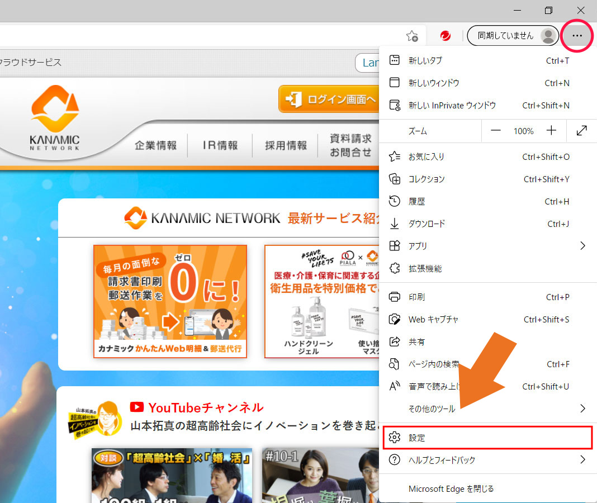
Microsoft Edgeの画面上部右側にある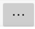（設定アイコン）をクリックして、設定を選んでください。
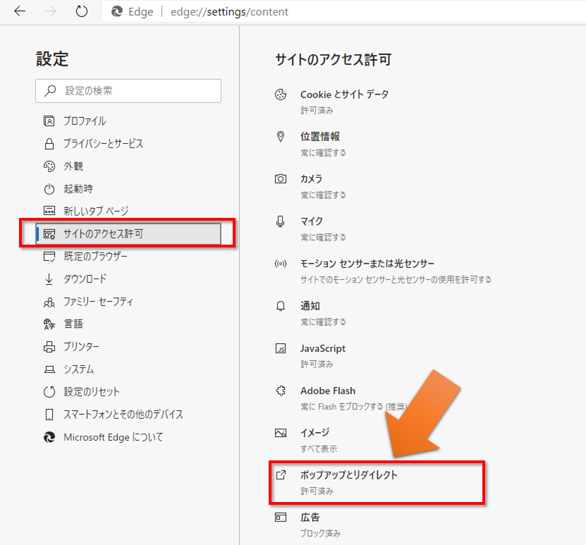
設定画面が開きましたら、左メニューの中の「サイトのアクセス許可」をクリックしてください。
さらに、「サイトのアクセス許可」メニューの中の「ポップアップとリダイレクトをクリックしてください。
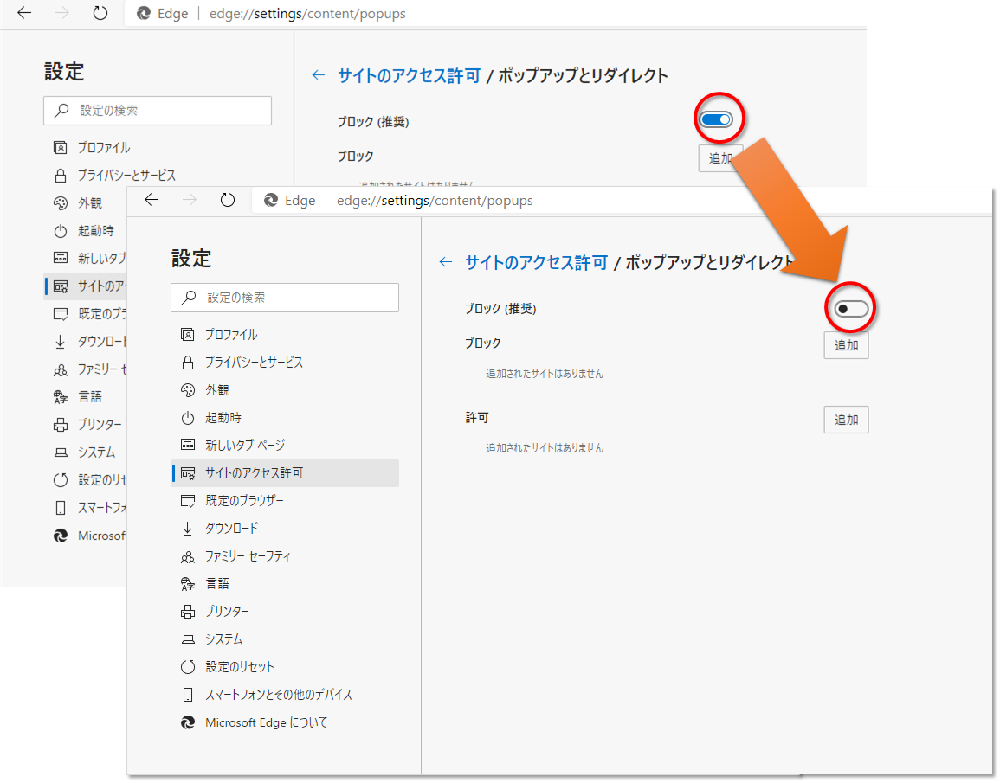
「ポップアップとリダイレクト」の画面が開きましたら、「ブロック」トグルをクリックしてグレーにしてください。
設定画面を閉じてください。
2. Google Chromeのポップアップブロック機能の場合
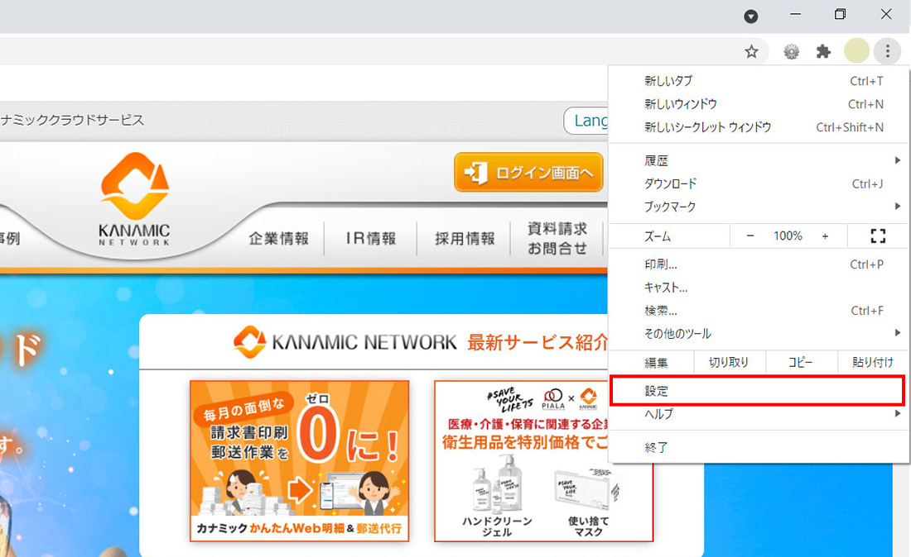
右上のその他アイコン 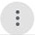 から[設定] をクリックします。
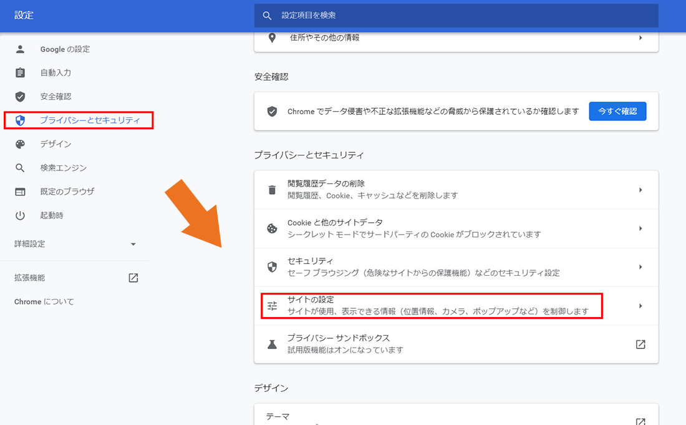
[プライバシーとセキュリティ] の [サイトの設定] をクリックします。
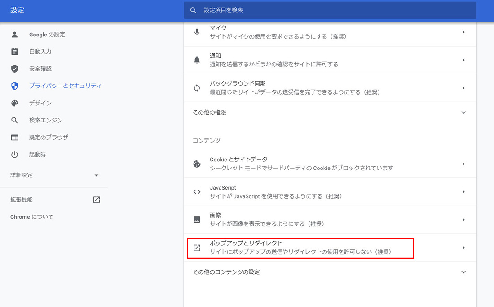
[ポップアップとリダイレクト] をクリックします。
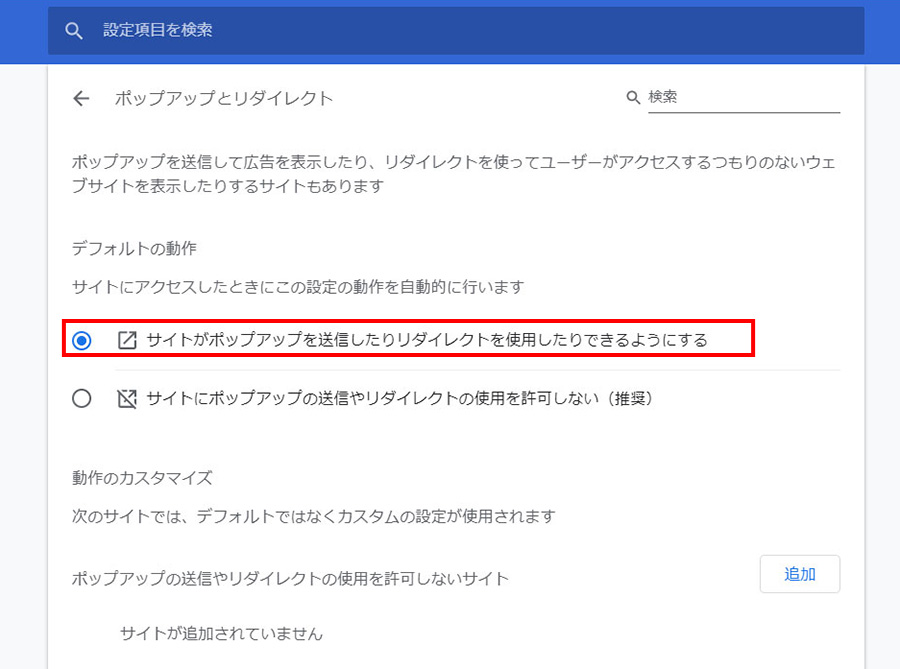
上部の設定を [サイトがポップアップを送信したりリダイレクトを使用したりできるようにする] に切り替えます。
設定画面を閉じてください。
3. iOS(iPhone・iPad等）のポップアップブロック機能の場合
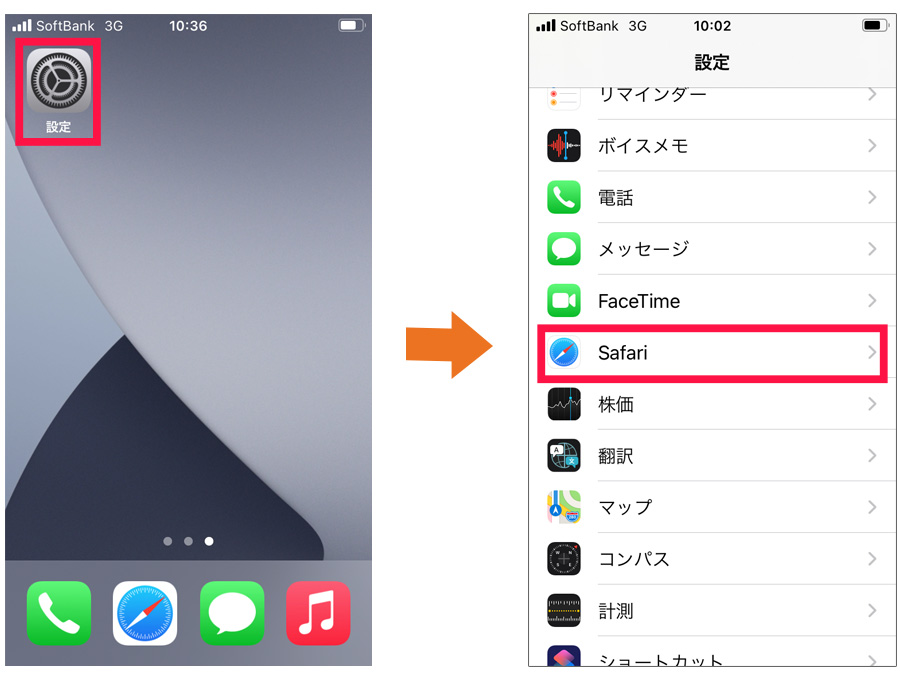
「設定」⇒「Safari」をタップします。
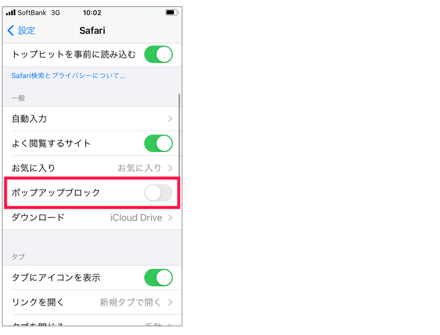
「ポップアップブロック」をOFFにします。
設定画面を閉じてください。
対象のウェブにアクセスすると、「このサイトではポップアップウインドウが開きます」と表示され「開かない／許可」と選択できます。
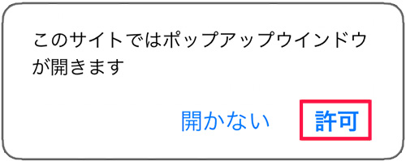
「許可」を選択します。
4. Android(ブラウザ）のポップアップブロック機能の場合
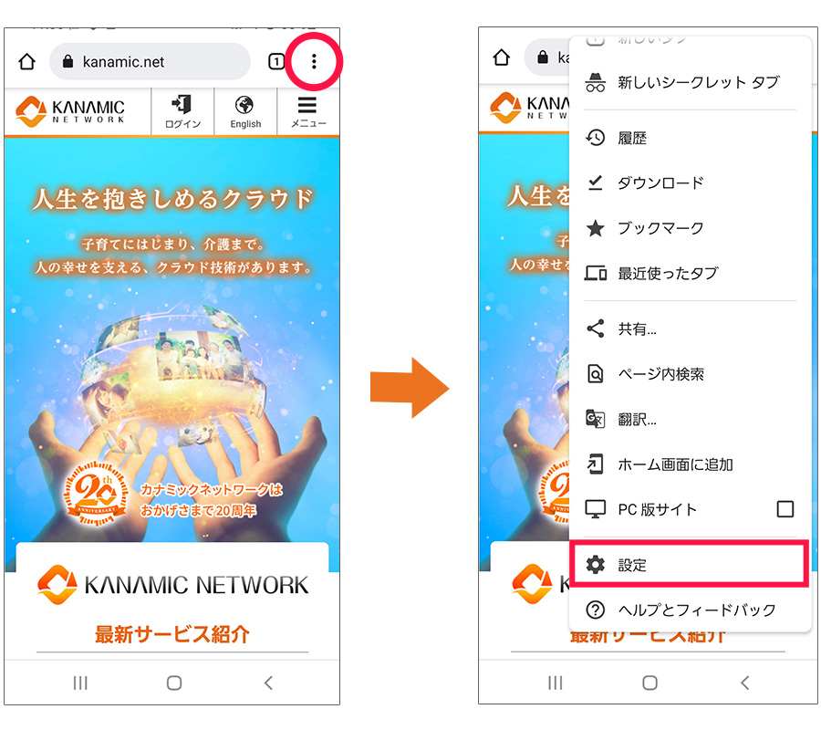
ブラウザ（ Google Chrome）画面右上のメニューアイコンをタップし、「設定」をタップします。
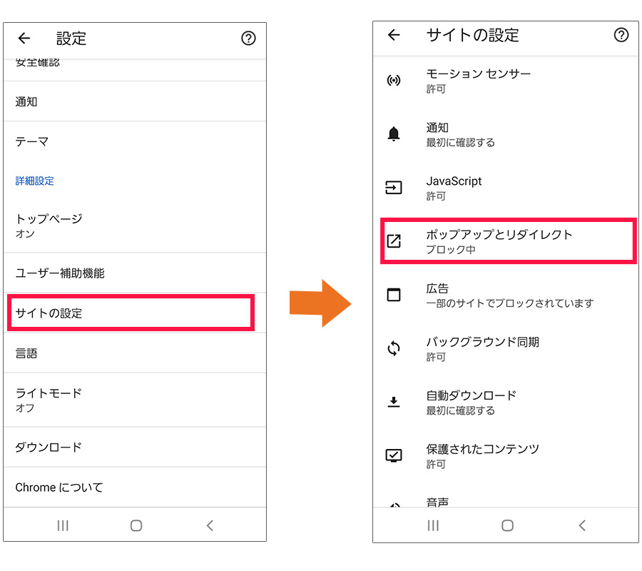
「サイトの設定」をタップし、「ポップアップとリダイレクト」をタップします。
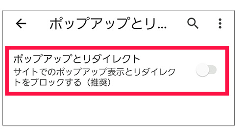
画面右側のつまみを左側にフリックし、ポップアップをOFFにします。
設定画面を閉じてください。